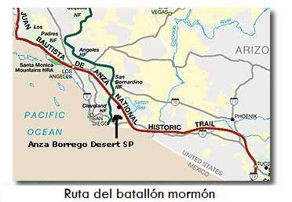

El invento norteamericano denominado “mormonismo” o “Iglesia de Jesucristo de los Santos de los Últimos Días”, creado en la segunda década de 1800, es de tendencia totalmente conservadora y depende directamente del espíritu del puritanismo calvino-imperialista de la doctrina del “Destino manifiesto”, según la cual los EEUU
“Están llamados por designio divino a ser los amos del mundo entero, comenzando primero, con el exterminio-sometimiento de los indígenas del norte de América, para después, pasar sobre los vecinos del sur (México), y, así paulatinamente, ir apoderándose del mundo entero, de una u otra forma.”
Uno de los rasgos de dicha doctrina, es su racismo para con los que no son de origen ario, con el pretexto de que “dios está con los blancos y que les dio su santo mandato”, los roben y expolien a su antojo. Mucho de esto tienen los anglo-mormones, que van a la par de dicho “Destino manifiesto”.
En su libro “JESÚS EL CRISTO”, publicado en inglés en 1964 y traducido al español en 1975, James e. Talmage, uno de los “Doce Apóstoles de la Iglesia de Jesucristo de los Santos de los Últimos Días”, deja ver, aparte de flagrantes distorsionismos y falsificaciones a la historia, el racismo anglo-mormón:
“El Libro de Mormón contiene la historia [sic] de una colonia de israelitas, de la tribu de José, que salieron de Jerusalén 600 años antes del nacimiento de Cristo, durante el reinado de Sedecías, rey de Judá, en vísperas de la conquista de Judea por Nabucodonosor y la inauguración del cautiverio babilónico. Esta colonia fue llevada por dirección divina al continente americano, en el cual llegaron a ser un pueblo numeroso y fuerte; y esto a pesar de que, divididos por las disensiones, formaron dos naciones enemigas, conocidas respectivamente como nefitas y lamanitas. Mientras aquéllos fomentaron las artes de la industria y la cultura, y escribieron unos anales en los que incorporaron su historia y Escrituras, éstos se volvieron degenerados y viles. Los nefitas fueron aniquilados en el año 400 de nuestra era, pero los lamanitas siguieron viviendo en su estado degenerado, y en la actualidad [1964] son conocidos como los indios americanos.” Pág. 50.

Continúa el “apóstol” Talmage:
“Los lamanitas, aun cuando aumentaron en número, sufrieron el anatema [maldición] del desagrado de Dios; su cutis se tornó obscuro, su espíritu se extravió, se olvidaron del Dios de sus padres, se entregaron a una vida salvaje y nómada y degeneraron en el estado caído en que se encontraban los indios de América, sus descendientes directos, cuando nuevamente [sic] se descubrió el continente en una época posterior”. Pág. 57.
“Luego entonces”, los “lamanitas” o “indios americanos”, se volvieron degenerados y viles, viviendo en un estado degradado; no fomentaron las artes de la industria y la cultura ni escribieron anales donde incorporasen su historia y Escrituras (por consiguiente, eran totalmente analfabetos), tenían un “espíritu extraviado”, siendo salvajes y nómadas y, finalmente, aniquilaron a los “nefitas”.
También, dios los tornó “oscuros” (todo lo que no sea “blanco”: “negros”, “morenos”, “prietos”, “amarillos”, etc.)
De aquí se desprende que los “nefitas” son los “buenos” y los “lamanitas o indios”, los “malos”, y perogrullescamente, dios no está con ellos, sino con los “blancos”.
El xenófobo y ariocentrista de Talmage se está basando en el “Libro de Mormón”, donde provienen toda esa retahíla de tonterías, pero el autor original de tal monstruosidad, peca de punta a punta de la más completa ignorancia, tanto histórica como cultural en general (o simula “pecar”).
A continuación, unos “versículos” del “Libro de Mormón” que van a tono con Talmage:
“21. Y él [el “Señor”] había hecho caer la maldición sobre ellos [los “lamanitas”], sí, una penosa maldición a causa de su iniquidad. Porque he aquí, habían endurecido sus corazones contra él, de modo que se habían vuelto como un pedernal; por tanto, ya que eran blancos y sumamente bellos y deleitables, el Señor Dios causó que los cubriese una piel de color obscuro [¿y los derechos de autor del recencionista de Noé?], para que no atrajeran a los de mi pueblo [que obviamente eran “blancos y sumamente bellos y deleitables”].
“22. Y así dice el Señor Dios: Haré que sean repugnantes a tu pueblo [ponen al “Señor Dios” como racista por antonomasia -y lo es-], a no ser que se arrepientan de sus iniquidades [“luego entonces”, los de piel “obscura” la tienen por ser “inicuos”: ¡aunque ellos no lo sepan!].
“23. Y malditos [mucha atención:] serán los descendientes de aquél que se mezcle con la posteridad de ellos; porque serán maldecidos con la misma maldición. Y el Señor lo habló; y así fue [“luego entonces”, todos los “mestizos” y “mulatos” son “malditos” por tener ascendencia de gente “no blanca” (que hable inglés of course)].
“24. Y a causa de la maldición que vino sobre ellos, se convirtieron en un pueblo ocioso [sic], lleno de malicia y astucia… [entonces, por el “hecho” de ser “blancos” los “nefitas” son “industriosos, llenos de bondad y cándidos”].
“25. Y el Señor Dios me dijo: Serán un azote a tus descendientes para estimularlos a que se acuerden de mí; y al grado de que no se acuerden de mí, ni escuchen mis palabras, los castigarán hasta la destrucción.”
[2 Nefi 5].
Talmage prosigue:
“Los lamanitas pieles rojas volvieron a sus costumbres degeneradas y nació en ellos una hostilidad asesina contra sus hermanos blancos [pretexto “legitimador” subjetivo para el saqueo y asesinato objetivos por parte del “blanco” invasor]; y en ambas naciones se generalizó todo género de prácticas corruptas [sólo que los “nefitas” no se volvieron de piel “obscura”]. Por muchos años los nefitas retrocedieron ante sus tenaces enemigos, dirigiéndose hacia el nordeste a través de lo que actualmente es el país de los Estados Unidos [¡todos los arqueólogos, antropólogos e historiadores están en la inopia vil por estos desconocimientos!]. Unos cuatrocientos años después de Cristo se libró la última batalla cerca del Cerro de Cumora [cerca de Manchester, Condado de Notario, Estado de Nueva York -pie de página-], y fue aniquilada la nación nefita. Los lamanitas o indios americanos, resto degenerado de la posteridad de Lehi [supuesto padre de “Nefi” y de “Lamán”], han continuado hasta el día de hoy [1964]”. Pág. 777.
Es de sobra hacer comentarios pues todo esto es bastante claro, sin embargo, cabe señalar el total estado de ignorancia en el que se encuentra la grey mormona, tanto la “blanca” como la de “piel de pedernal” para tragarse tanta estolidez.
En el libro “LA VERDAD RESTAURADA”, compendio de Gordon B. Hinckley, también parte del consejo de los “Doce Apóstoles de la Iglesia…”, de 1969, se menciona el comentario de F. S. Dellenbaugh, “renombrado investigador”, acerca de las poblaciones mormonas del siglo antepasado, enquistadas en territorio ajeno (o sea, en México):
“Se debe reconocer que los mormones fueron destacados conquistadores de los yermos [“yermos” ajenos]. No sólo los subyugaron [no sólo a los “yermos”], sino los conservaron subyugados; y en lugar de cantinas y garitos [luego entonces, “Las Vegas” ha de ser de fundación “lamanita” y no de gángsteres “blancos”], plantaron huertos, jardines, hortalizas, escuelas y hogares pacíficos [sic], que fueron las piedras angulares de su progreso y un ejemplo a los naturales [sic] de la superioridad [sic] del blanco”. Pág. 134.
No sólo plantaron “huertas”, también plantaron el monumento a la ignominia en suelo entonces mexicano: un “Monumento al Batallón Mormón en los jardines del capitolio del estado de Utah”. Dicho “Monumento” se erigió en “honor” a los invasores anglo-mormones en la guerra perpetrada por los imperialistas anglos de 1847 para despojar de territorio a México. Supuestamente nunca combatieron pero dejaron allí la señal de sus “pías” intenciones. De todas formas, el Batallón Mormón fue felicitado por el coronel Cooke:
“En vano se buscará una marcha semejante de infantería. La mitad del viaje se hizo entre yermos, donde no viven sino salvajes [sic] y animales silvestres…” Págs. 106-107.
Qué contrastadas resultan ser las palabras que cita el historiador mexicano García Cantú de personajes como Zarco y otros, refiriéndose a dicha invasión anglosajona (mormones insertos):
“En Nuevo México el despojo y el destierro en masa y todo género de excesos fueron hechos notorios cuando los mormones se apoderaron del gobierno.”
“En 1850 los mexicanos eran vendidos en la Costa Bárbara de California, empezando los linchamientos, no de negros como más tarde ocurriría en Georgia, sino de mexicanos. El deporte favorito de los rancheros era cazar hombres… Arrasaban los poblados. El desenfreno, en varios sitios, duró semanas. Los sobrevivientes -los niños- fueron esclavizados.”
”[Los mexicanos] han muerto, al menos en su inmensa mayoría, cazados como fieras en los bosques texanos por el rifle yanquee: sus propiedades han sido robadas, muchos huyeron de aquella tierra maldita, y los pocos que quedan, lloran todavía…”
“De 1850 a 1890, en la ciudad de Los Ángeles, hubo once linchamientos. Uno […] ocurrió en Downieville, California, al asesinar una turba de mineros a una muchacha mexicana. En 1873 lincharon a varios campesinos en Tucson y a otros más en Bisbee. A Teófilo Trujillo, por implantar en Colorado la cría de ovejas, lo mataron a palos… Los mexicanos fueron expulsados de sus aldeas y no podían salir, sin permiso, de los barrios en que fueron confinados”.
No obstante a todo lo anterior, un mormón mexicano (lacayo y títere vendido del imperialismo milenarista, que por cierto tuve un altercado con éste en la UNAM), según él de origen otomí (entonces “lamanita” de “pura cepa”), Agrícol Lozano Herrera, en su libro “HISTORIA DEL MORMONISMO EN MÉXICO”, publicado para la grey en 1983, queriendo pasar como “anécdota simpática” un hecho vergonzante, comenta lo siguiente en su sección “HOMBRES LEYENDA”, sobre un dirigente mormón norteamericano en nuestro suelo patrio (México):
“CLAUDIO C. BOWMAN: Recio como roble, hombre de poco hablar y mucha acción… Presidente de la Misión Mexicana… Típico en él, es que cuando alguien pretendía oponerse a la autoridad, repetía persuadido que era verdad [sic]: ¿Quién es el Kaiser, tú o yo?, después de oir la convincente [sic] respuesta, musitaba: luego entonces”.
“Luego entonces”, todos los “blancos” en lo general y, los mormones en lo particular, están bendecidos por la divinidad para hacer lo que les plazca: siempre serán inocentes pues el color de su piel así lo indica. Tienen la bendición de su dios para expoliar y asesinar hasta la saciedad a los “no blancos” ya que estos últimos están anatemizados por el gran demiurgo: en el color de su piel llevan el sello de la esclavitud, de la dependencia, de la explotación. Ya “dios” (con minúscula) emitió su inapelable fallo: Destino manifiesto. Los “nefitas” imperiales, sojuzgarán a los “lamanitas” salvajes. Amén.
Si quieres conocer los argumentos de un ex-mormón puedes leer (en inglés) “Mormonismo: ¿Religión legítima o culto?” (Ensayo ubicado fuera de Sindioses.org)
Volver a la sección Sociedad y religión
Comentarios
Comments powered by Disqus